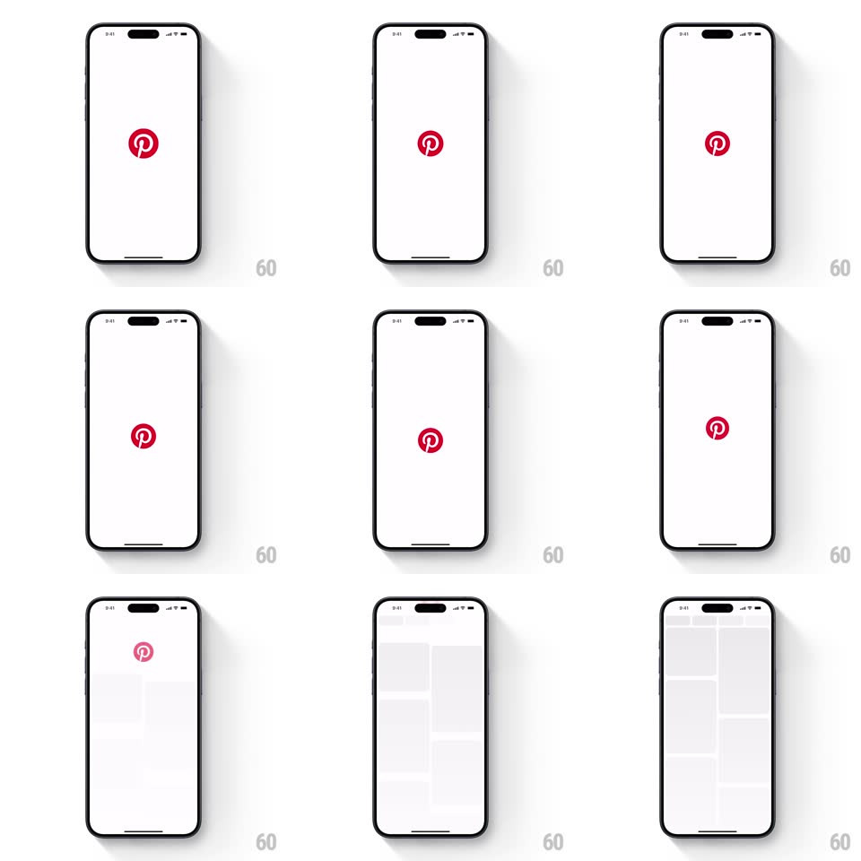

Media
Frame-by-frame

Rebuild this interaction 1:1: Pinterest's splash-to-app transition - the red P logo holds on white, dips smaller in anticipation, then scales up past the camera so its hollow center becomes the window through which the home feed appears.

Rebuild this interaction 1:1: Pinterest's splash-to-app transition - the red P logo holds on white, dips smaller in anticipation, then scales up past the camera so its hollow center becomes the window through which the home feed appears. ## Integration Integration: stack-agnostic spec - springs given as stiffness/damping, timed motions as duration + curve; map every value to your framework and animation library of choice. ## Scene White splash: the red Pinterest P badge centered. Destination: the home feed's masonry grid (pale placeholder cards) fading in behind. ## Motion spec Pattern: anticipation dip, then scale-through reveal. - The logo rests at center ~500ms, then dips to scale 0.85 (150ms, ease-in) - a breath in. - It then scales up aggressively (scale 1 -> ~18 over 600ms, ease-in accelerating) and fades slightly at the extreme, its counter (the P's hollow) widening until the edges leave the screen. - Through the expanding negative space, the feed is revealed: masonry placeholder blocks fade up at ~60% opacity, staggered by column (80ms apart, 300ms each). - The transition ends clean: no logo remnant, feed interactive immediately. ## Calibration - Total under 1.3s; the dip is 20% of the time, the expansion 50%. - The logo never rotates or slides - pure scale, dead center. ## Reduced motion Splash fades to the feed. ## Don't miss - The anticipation dip is the whole trick - without it the scale-up feels like a loading spinner. - The feed must already be laid out underneath before the expansion starts; no pop-in after the reveal.